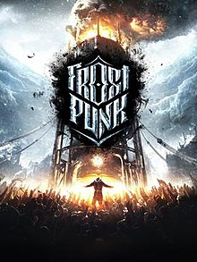

ABOUT THIS GAME
Frostpunk is a brand-new title from the creators of This War of Mine. It’s a society survival game that asks what people are capable of when pushed to the brink of extinction. In an entirely frozen world, people develop steam-powered technology to oppose the overwhelming cold. The city’s ruler has to manage both the citizens and the infrastructure they live in. The leader’s tactical skills face challenges that will frequently question morality and the basic foundations of what we consider organized society. Optimization and resource management often clash with empathy and thoughtful decision-making. While city and society management will consume most of the ruler’s time, at some point exploration of the outside world is necessary to understand its history and present state.
SYSTEM REQUIREMENTS
OS: Windows 7/8/10 64-bit
Processor: 3.2 GHz Dual Core Processor
Memory: 4 GB RAM
Graphics: GeForce GTX 660, Radeon R7 370 or equivalent with 2 GB of video RAM
DirectX: Version 11
Storage: 8 GB available space
Sound Card: DirectX compatible